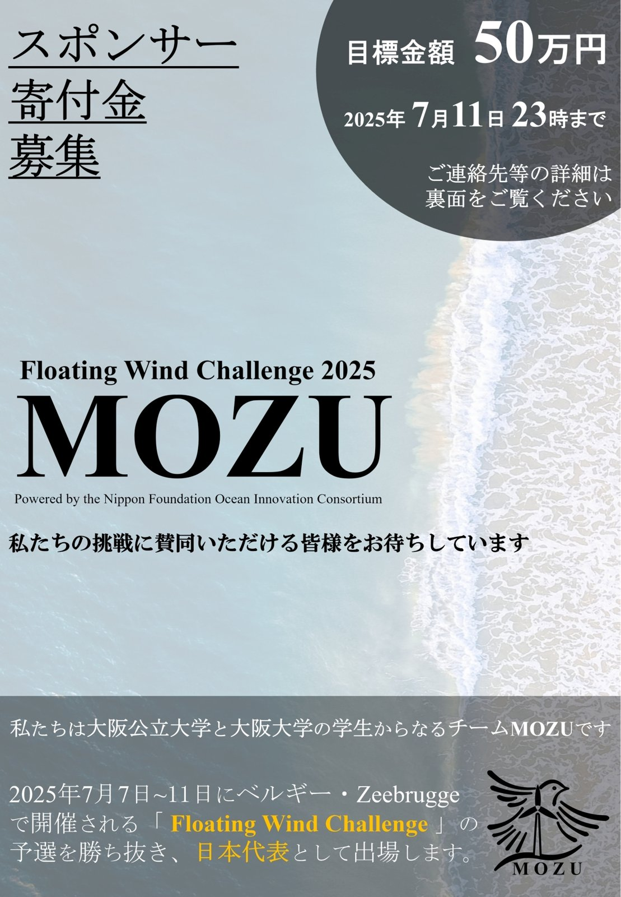
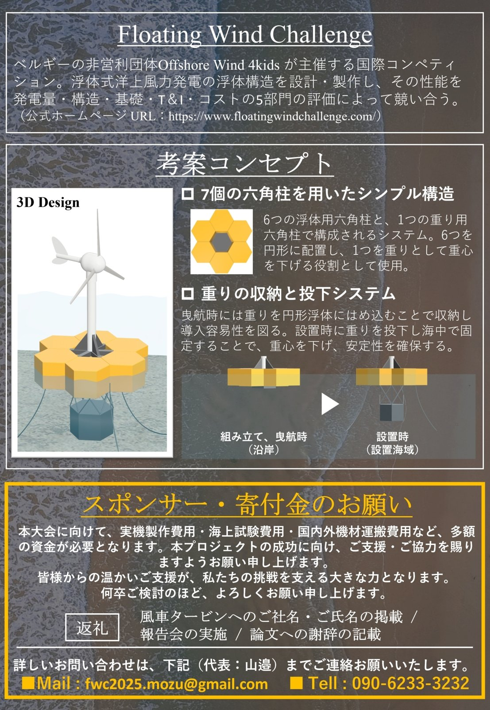
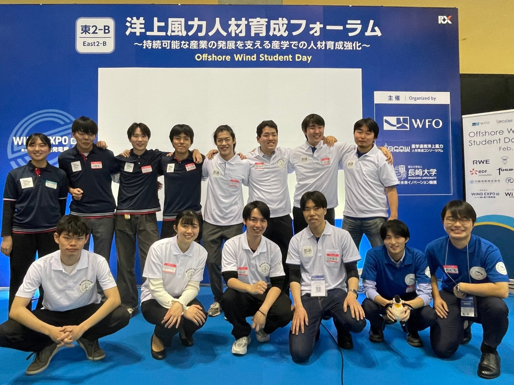
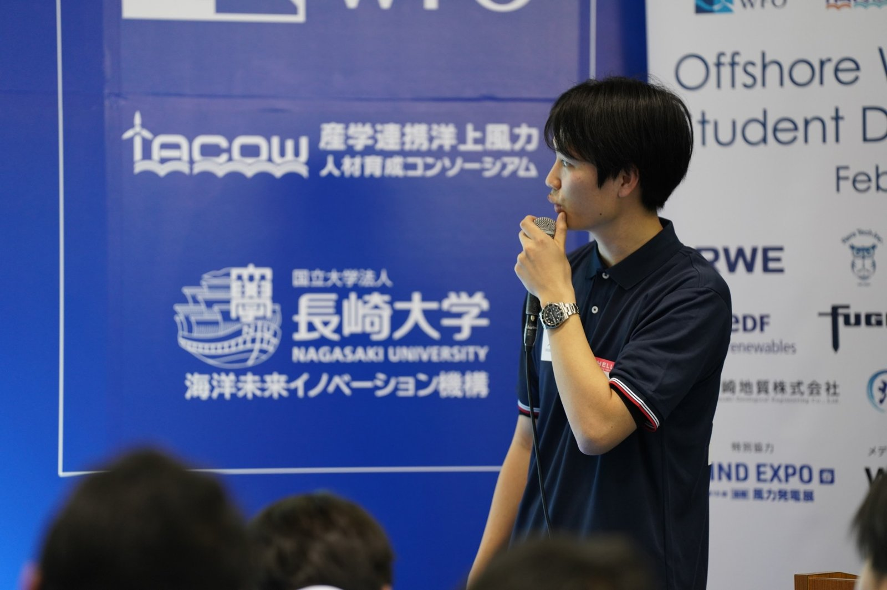
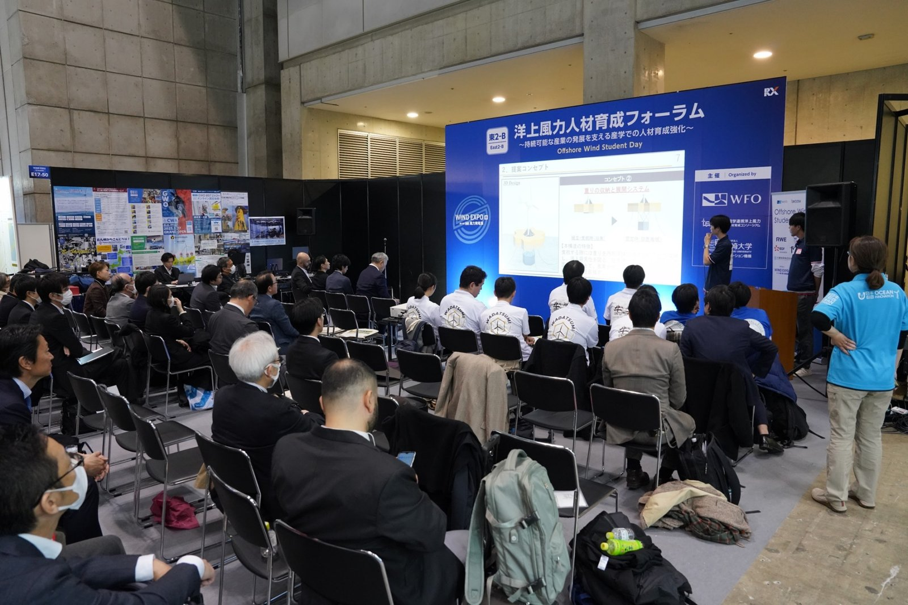
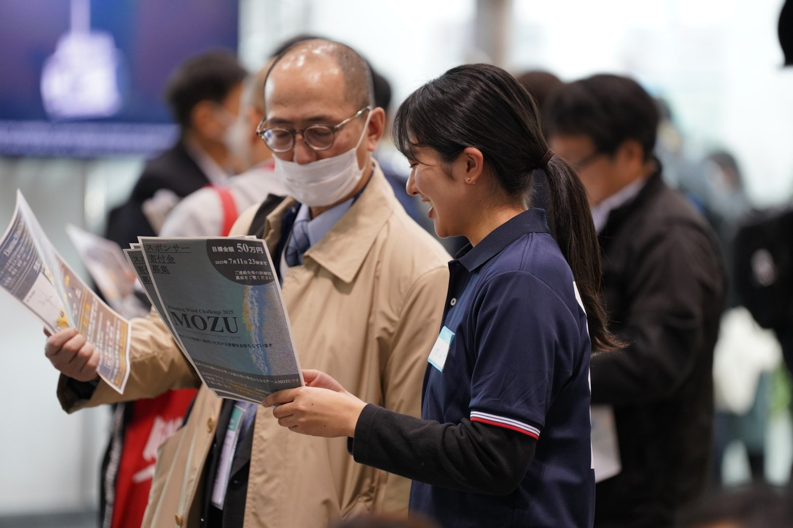

2025.03.04報告
お願い：「チームMOZU」へのご支援のお願い
2025/03/04
「チームMOZU」へのご支援のお願い
柴原研究室 M1 山邉晃瑠
私たち「チームMOZU」は、大阪公立大学と大阪大学で海洋工学を学ぶ学生によって結成されたチームです。
2025年7月にベルギー・ゼーブルージュ（Zeebrugge）で開催される国際コンペティション “Floating Wind Challenge” に、日本代表として出場いたします。
本大会では、浮体式洋上風力発電 の浮体構造物を設計・製作し、発電量・構造・基礎・輸送・コストの5つの部門で競い合います。決勝大会には、予選を勝ち抜いた世界10か国の14チーム が集い、総合優勝を目指して技術力を競います。
しかしながら、実機製作や海上試験、国内外への機材運搬など、多額の資金が必要 となります。そのため、スポンサー様やご寄付によるご支援・ご協力をお願い したく存じます。皆様の温かいご支援が、私たちの挑戦を後押しし、より良い未来の技術革新につながります。
ご支援の返礼について
ささやかではございますが、ご支援いただいた企業・個人の皆様には、以下の形で感謝の気持ちをお伝えいたします。
✓ 風車タービンへの企業名・個人名の掲載
✓ 成果報告会の実施（プロジェクトの進捗や大会結果をご報告いたします）
✓ 論文への謝辞の記載（大会での技術発表の際にご支援者様を記載）
✉メール: fwc2025.mozu@gmail.com（代表：山邉）
皆様のご支援が、私たちの挑戦を大きく支えてくださることを心より願っております。何卒よろしくお願い申し上げます。      


※大阪公立大学 柴原研究室HPより